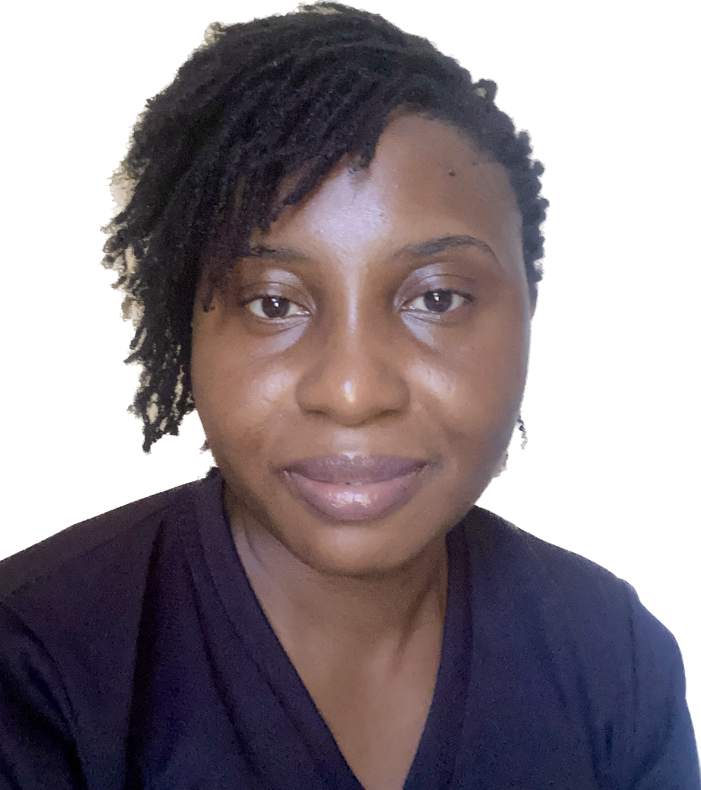

Ndidiamaka Ugwu

Fullstack Developer and a Content Writer.
Summary
I am adept at weaving stories; writing engaging and relatable content for a wide range of audiences. I have a well- rounded skill set that includes excellent time management and communication abilities. I am confident on the job, have a good eye for details, and constantly strive to improve.
As a former English language teacher with an avid interest in content writing and digital marketing, I believe that my experiences, skills, and interests enhance my skills as a content writer.
Here is a link to my portfolio:- https://www.clippings.me/ndidiamaka-ugwu
Experience
Freelance Content writer:
May 2022 - Present (11 months)
Content Writer at Deep Knowledge Group Philanthropy :
Mar 2022 - Jul 2022
Freelance Content writer:
2021 - Mar 2022
English Language Teacher (Dominion Vocational Schools):
Jan 2021 - Oct 2021
Kitchen Assistant (Chillingz African Restaurant):
Nov 2017 - Nov 2019
English Language Teacher (Future Leaders International Schools):
Jan 2015 - 2017
English Language Teacher (Salem Academy):
2014 - 2015
English Language Teacher (Youths Academy):
Jan 2015 - 2017
English Language Teacher (2013 - 2014 ):
Jan 2015 - 2017
Education
- University of Nigeria, Nsukka: Bachelor of Arts - BA, English and literary studies ( 2008 - 2012)
- Queens Science Secondary School: West African Examination Certificate, Arts ( 2005 - 2008)
- King of Kings Academy: Junior Secondary School Certificate Examinations ( 2001 - 2005)
Skills
- HTML
- Copywriting
- English
- Operations Management
- Social Studies
- English Teaching
- Teaching
- Social Media
- Networking
- Literature
Contact
Email 📧: ugwundidiamaka91@gmail.com